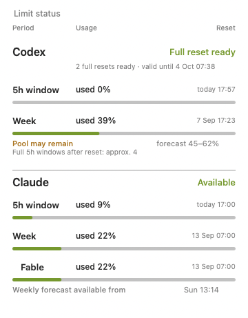

Alerts that find you away from the Mac.
Telegram and Slack, with a remote-only mode: the message goes out only when you are not at the machine. At your desk you get a normal macOS banner instead of a phone buzzing in your pocket.
A macOS menu bar app that reads the usage data Claude Code and Codex already write on your Mac, and tells you when the 5-hour or weekly window resets. No account. No server. Nothing leaves your Mac.
Apple Silicon, macOS 11 or newer. Free while in beta.
You are mid-task. Claude Code stops and tells you to try again later. From that moment you have two bad options: keep checking, or walk away and find out an hour after the limit came back that you could have been working.
The reset time is not a secret. Both Claude Code and Codex write it to files on your own Mac. Nothing reads those files and tells you.
A notification at the reset, not a dashboard you have to remember to open. The alert is scheduled with launchd, so it survives a restart and a logout, and it removes itself after it fires. Click it and the right app opens.
It tells you what you were doing. When Claude runs out, the app notes which Claude Code projects you touched in the last 30 minutes and puts them in the message you get after the reset. You come back to a name, not a blank screen.
Two dots in the menu bar. One for Codex, one for Claude, coloured by how much of the window is gone, with the reset time next to them.

Telegram and Slack, with a remote-only mode: the message goes out only when you are not at the machine. At your desk you get a normal macOS banner instead of a phone buzzing in your pocket.
Providers raise limits for a weekend or run a promotion and announce it on a blog or an RSS feed. The app scans the official sources and tells you. Reddit and X links come through separately, marked as unconfirmed.
doctor reports what is broken. Self-repair fixes the safe things on its own, once you turn it on. Diagnostics export gives you a report with no secrets in it, so you can send it to me.
No account to create, no server to send data to, no telemetry. The app reads local files. Telegram tokens and Slack webhooks go into the macOS Keychain, encrypted, with no copy in a plain file.
Written out so you find out here rather than after installing.
AI-limit-watcher.app to Applications.xattr -cr /Applications/AI-limit-watcher.app in Terminal and launch it again.The app lives in the menu bar and never appears in the Dock. To remove it, drag it to the Trash.
Does it send anything anywhere? No. There is no server behind this app and no account. The only outbound traffic is what you switch on yourself: a Telegram or Slack message you configured, and the announcement scanner fetching public pages.
Does it touch my API keys? No. It never reads or writes your login credentials. One optional feature (live percentages for Claude) reads a token that Claude Code already stores in your Keychain, and macOS asks you for permission each time. It is off by default.
What does it store? Reset times, percentages and your settings, in a single file in your home folder. You can delete it and lose nothing but history.
I built this for myself. Turning it into a product I can keep alive means paying Apple 99 dollars a year to sign it, before anyone has paid me anything. So I am asking before I spend it, not after. Pick a number. It costs you one click and it is the only answer I actually need.